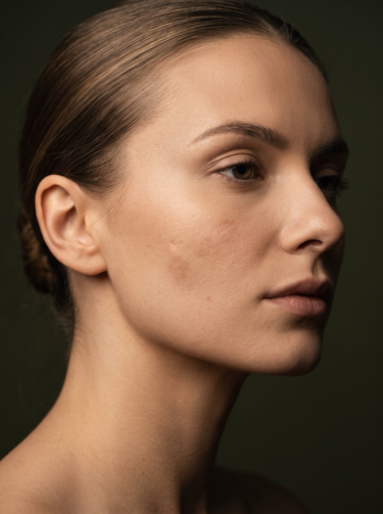

Laser tulowy LUMIVEX® w Płocku – precyzyjna regeneracja skóry
Marzysz o gładszej, jędrniejszej i promiennej skórze bez skalpela i wypełniaczy? Laser tulowy (erbowo-szklany) to zaawansowana technologia frakcyjna, która pobudza skórę do intensywnej regeneracji — redukuje przebarwienia, blizny potrądzikowe i pierwsze oznaki starzenia.
Cena już od:
299
zł
Dostępne dla tego zabiegu na recepcji w salonie
Zabiegi Hi-Tech
Laser tulowy w Płocku – co to jest i na czym polega zabieg?
Laser tulowy (erbowo-szklany) to zaawansowana technologia laserowa klasy medycznej, działająca w warstwie naskórka i skóry właściwej bez uszkadzania jej powierzchni. Emitowane impulsy światła o długości fali 1927 nm i 1550 nm tworzą mikroskopijne kanały, które aktywują procesy regeneracji i produkcję kolagenu. Efekt? Skóra staje się gładsza, bardziej napięta i rozświetlona już po pierwszym zabiegu.
Zabieg rozpoczyna się od dokładnego oczyszczenia i przygotowania skóry. Następnie, przy użyciu precyzyjnej głowicy lasera, energia światła przenika w głąb skóry, tworząc mikroskopijne kanały termiczne. W rezultacie dochodzi do intensywnej przebudowy kolagenu i elastyny, co prowadzi do poprawy napięcia i gęstości skóry oraz redukcji zmarszczek, blizn i przebarwień. Zabieg jest dobrze tolerowany i zwykle nie wymaga długiej rekonwalescencji.
Najlepsze rezultaty uzyskuje się po serii 3–4 zabiegów wykonywanych w odstępach 4–6 tygodni. Każda terapia poprzedzona jest dermokonsultacją w celu indywidualnego dobrania parametrów i obszaru zabiegowego.
FAQ
Najczęściej zadawane pytania
Na czym polega działanie lasera tulowego?
Laser tulowy (erbowo-szklany) emituje impulsy światła o długości fali 1927 nm i 1550 nm, które tworzą w skórze mikroskopijne kanały termiczne. Aktywują one naturalne procesy regeneracji i produkcję kolagenu, dzięki czemu skóra staje się gładsza, bardziej napięta i rozświetlona już po pierwszym zabiegu.
Czy zabieg jest bolesny?
Zabieg jest dobrze tolerowany i zwykle nie wymaga długiej rekonwalescencji. Po zabiegu skóra może być lekko zaczerwieniona i podrażniona przez 1–2 dni — to normalna, przejściowa reakcja.
Ile zabiegów potrzeba, żeby zobaczyć efekty?
Efekty widoczne są już po pierwszym zabiegu, a najlepsze rezultaty uzyskuje się po serii 3–4 sesji wykonywanych w odstępach 4–6 tygodni. Każda terapia poprzedzona jest dermokonsultacją, podczas której dobieramy parametry i obszar zabiegowy indywidualnie.
Jak długo trwa rekonwalescencja po zabiegu?
Skóra zaczyna się regenerować już po kilku dniach, a pełny efekt zabiegu widoczny jest po około 2–3 tygodniach. Przez kilka dni po zabiegu warto unikać sauny, basenu, intensywnego wysiłku oraz kosmetyków z kwasami i retinolem, stosując za to kremy łagodzące i ochronę SPF 50.
Kto powinien skorzystać z zabiegu laserem tulowym?
Zabieg polecany jest osobom, które chcą poprawić kondycję skóry, wyrównać jej koloryt i zredukować widoczne oznaki starzenia — przy utracie jędrności, suchości, rozszerzonych porach, przebarwieniach pozapalnych, zmianach potrądzikowych i pierwszych zmarszczkach. Skutecznie regeneruje też skórę po lecie, zabiegach inwazyjnych i terapiach dermatologicznych.
Technologia LUMIVEX®
LUMIVEX®. Dwie długości fali w jednym zabiegu.
Laser tulowy w INSTYTUTem.™ wykonujemy na urządzeniu LUMIVEX® — nowoczesnym laserze frakcyjnym łączącym dwie sprawdzone technologie: 1927 nm (Thulium) i 1550 nm (Er:Glass). Synergia obu długości fali pozwala oddziaływać jednocześnie na powierzchnię skóry i jej głębsze warstwy, zapewniając wszechstronne efekty odmładzania, regeneracji i rewitalizacji.
Dualna długość fali
1927 nm (Thulium) + 1550 nm (Er:Glass)
Dwie sprawdzone technologie połączone w jednym urządzeniu — jedna długość fali działa na powierzchni skóry, druga sięga jej głębszych warstw. Dzięki tej synergii zabieg jest skuteczny zarówno przy przebarwieniach i teksturze skóry, jak i przy głębszej przebudowie kolagenu.
Dopasowana intensywność
Trzy tryby pracy lasera
Tryb nieablacyjny działa termicznie w skórze właściwej, bez okresu rekonwalescencji — idealny do delikatnego odmładzania. Tryb subablacyjny obejmuje warstwę rogową naskórka i sprawdza się przy przebarwieniach. Tryb ablacyjny sięga najgłębiej, oferując najintensywniejszą przebudowę skóry przy bliznach i rozstępach.
Precyzja zabiegu
Inteligentne dozowanie energii
Urządzenie pozwala precyzyjnie kontrolować rozmiar plamki lasera oraz intensywność terapii, dobierając parametry indywidualnie do potrzeb Twojej skóry — od delikatnych zabiegów rewitalizacyjnych po intensywniejsze procedury regeneracyjne.
Wszechstronność zabiegowa
Głowica statyczna i roller
Głowica statyczna umożliwia precyzyjną pracę na twarzy i ciele — od delikatnej okolicy oczu po większe partie skóry. Dodatkowa głowica roller wspiera terapię wpływającą na kondycję skóry głowy.

Przejrzysty cennik
Proste ceny dopasowane do obszaru zabiegowego.
Cennik jest podzielony wg obszaru zabiegowego — od pojedynczego zabiegu punktowego po pełną twarz z szyją i dekoltem — a cena i czas trwania są znane od razu, bez ukrytych kosztów i niespodzianek podczas płatności.
Wskazania do zabiegu
Ten zabieg pomoże, jeśli:
Zauważasz utratę jędrności skóry i pierwsze oznaki starzenia
Zmagasz się z suchością skóry i rozszerzonymi porami
Masz przebarwienia pozapalne lub nierówny koloryt skóry
Pozostały Ci blizny lub zmiany potrądzikowe, które chcesz zredukować
Pojawiły się pierwsze zmarszczki, a Ty chcesz je zminimalizować bez ingerencji inwazyjnej
Twoja skóra potrzebuje regeneracji po lecie, zabiegach inwazyjnych lub terapiach dermatologicznych
Szukasz efektu liftingu i poprawy struktury skóry bez skalpela i wypełniaczy
Cennik
Ile kosztuje laser tulowy w Płocku?
Cena zależy od obszaru zabiegowego — od pojedynczego zabiegu punktowego po pełną twarz z szyją i dekoltem. Poniżej sprawdzisz dokładny cennik.
Konsultacje
Pakiet PowitalnyPromocja
149 zł
Dermokonsultacja · 35 min
149 zł
ZarezerwujPrezent na start: jeśli po konsultacji zdecydujesz się na rekomendowany zabieg (w tym samym dniu lub w ciągu 14 dni), cała kwota 149 zł zostanie odliczona od jego ceny. Ekspercki plan opieki otrzymujesz w prezencie!
Wizyta kontrolna · 15 min
0 zł
Dla osób w trakcie serii zabiegowej lub po próbie laserowej.
Zabieg
od 299 zł
Zabieg punktowy · 20 min
od 299 zł
ZarezerwujDłonie · 45 min
599 zł
ZarezerwujOkolica oczu · 45 min
799 zł
ZarezerwujSzyja lub dekolt · 45 min
899 zł
ZarezerwujTwarz · 1 godz. i 5 min
1199 zł
ZarezerwujTwarz + szyja · 1 godz. i 20 min
1499 zł
ZarezerwujTwarz + szyja + dekolt · 1 godz. i 35 min
1799 zł
ZarezerwujZalecenia zabiegowe i przeciwwskazania
Postępowanie przed i po zabiegu
- Aktywne infekcje, stany zapalne lub uszkodzenia skóry w obszarze zabiegowym
- Świeża opalenizna, stosowanie samoopalaczy lub planowana ekspozycja na słońce
- Ciąża i okres karmienia piersią
- Nowotwory skóry lub stan po ich leczeniu
- Aktywna opryszczka lub inne infekcje wirusowe
- Przyjmowanie leków lub ziół fotouczulających (np. dziurawiec, tetracykliny)
- Stosowanie retinoidów (np. izotretynoiny) w ciągu ostatnich 6 miesięcy
- Epilepsja, cukrzyca lub inne nieuregulowane choroby hormonalne
- Choroby autoimmunologiczne oraz zaburzenia gojenia
- Skłonność do bliznowców (keloidów)
- Na kilka dni przed zabiegiem unikaj retinoidów, peelingów chemicznych oraz ekspozycji na słońce i solarium.
- Skóra powinna być czysta, bez aktywnych stanów zapalnych.
- Nie stosuj samoopalaczy ani kosmetyków z kwasami i witaminą C w wysokich stężeniach.
- Skóra może być lekko zaczerwieniona i podrażniona przez 1–2 dni — to normalna reakcja.
- Stosuj łagodzące i nawilżające kremy regenerujące oraz ochronę przeciwsłoneczną SPF 50.
- Przez kilka dni unikaj sauny, basenu, intensywnego wysiłku fizycznego oraz kosmetyków z kwasami i retinolem.
- Skóra zaczyna się regenerować już po kilku dniach, a pełny efekt widoczny jest po około 2–3 tygodniach.